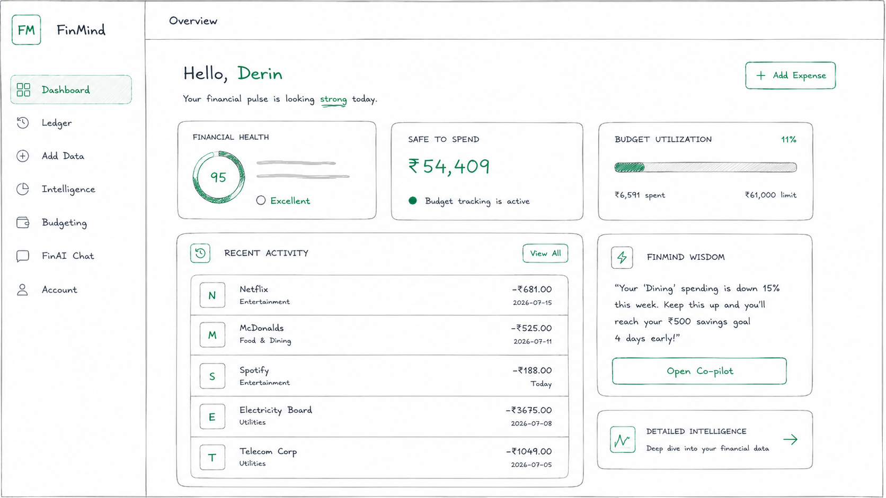

Table of Contents
- 1. Article Bundle Architecture
- 2. Inline Styling & Badges
- 3. Code Blocks & Copy Button
- 4. Local Image Assets
1. Article Bundle Architecture
This article uses the 1 Folder = 1 Article + 1 Assets Directory architecture:
Text
journals/2026/mastering-modern-markdown-architecture/
├── mastering-modern-markdown-architecture.md
└── assets/
└── architecture.png2. Inline Styling & Badges
- Highlights: Classic warm yellow highlighter pen for important notes.
- Strikethrough:
Outdated legacy approachwith Emerald Green line. - Do's & Don'ts Badges:
- Recommended Best Practice: Keep assets co-located with their article.
- Anti-Pattern: Don't dump all images into a single global folder.
3. Code Blocks & Copy Button
pipeline/renderer.py
def render_article(file_path: str) -> str:
"""Parses frontmatter and renders markdown cleanly."""
print(f"Rendering article: {file_path}")
return "SUCCESS"4. Local Image Assets
Here is a local image asset loaded using a direct relative path (./assets/architecture.png):
